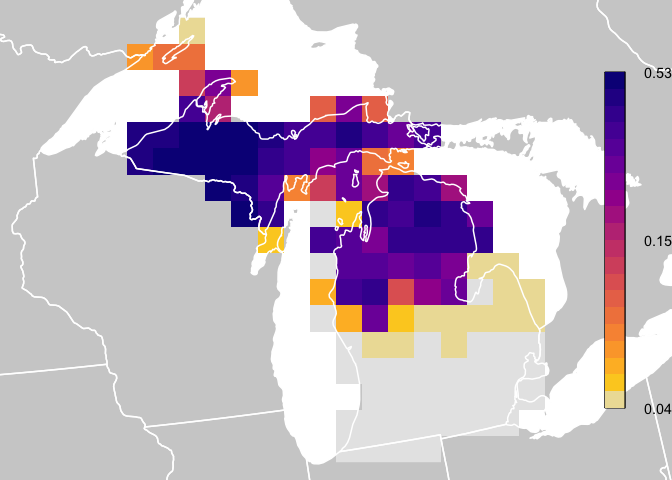

Overview
The eBird Status and Trends project project at the Cornell Lab of Ornithology uses machine-learning models to produce estimates of range boundaries, occurrence rate, and relative abundance at high spatial and temporal resolution across the full annual cycle of 1,202 bird species globally. These models learn the relationships between bird observations collected through eBird and a suite of remotely sensed habitat variables, while accounting for the noise and bias inherent in community science datasets, including variation in observer behavior and effort. Interactive maps and visualizations of these model estimates can be explored online, and the Status and Trends Data Products provide access to the data behind these maps and visualizations. The ebirdst R package provides a set of tools for downloading these data products, loading them into R, and using them for visualizing and analysis.
Installation
Install ebirdst from GitHub with:
# install.packages("remotes")
remotes::install_github("cornelllabofornithology/ebirdst", build = FALSE)This version of ebirdst is designed to work with the eBird Status Data Products estimated for the year 2021, with visualizations being released on the web in November 2021, and data access being made available in June 2022 Users are strongly discouraged from comparing Status and Trends results between years due to methodological differences between versions. If you have accessed and used previous versions and/or may need access to previous versions for reasons related to reproducibility, please contact ebird@cornell.edu and your request will be considered.
Data access
Data access is granted through an Access Request Form at: https://ebird.org/st/request. Access with this form generates a key to be used with this R package and is provided immediately (as long as commercial use is not requested). Our terms of use have been designed to be quite permissive in many cases, particularly academic and research use. When requesting data access, please be sure to carefully read the terms of use and ensure that your intended use is not restricted.
After completing the Access Request Form, you will be provided a Status and Trends access key, which you will need when downloading data. To store the key so the package can access it when downloading data, use the function set_ebirdst_access_key("XXXXX"), where "XXXXX" is the access key provided to you. Restart R after setting the access key.
For those interested in accessing these data outside of R, the most widely used data products are available for direct download through the Status and Trends website. Spatial data are accessible in widely adopted GeoTIFF and GeoPackage formats, which can be opened in QGIS, ArcGIS, or other GIS software.
Versions
The Status and Trends Data Products provide estimates of relative abundance, and other variables, for a particular year. This estimation year is used to identify the version of the data products. Each version of this R package is associated with a particular version of the data. For example, the current version of the R package is 1.2021.1 and, as indicated by the year in the version number, it is designed to work with the 2021 data products. Every year, typically in November, the Status and Trends Data Products are updated, and users are encouraged to update this R package and transition to using the new version of the data products. After the data products are updated, there will be a brief period where access to the previous version is also provided, allowing users to finish any analyses with this previous version. If you intended to continue using the older data products during this period you must not update the R package.
Citation
If you use the the eBird Status & Trends data please cite it with:
Fink, D., T. Auer, A. Johnston, M. Strimas-Mackey, S. Ligocki, O. Robinson, W. Hochachka, L. Jaromczyk, A. Rodewald, C. Wood, I. Davies, A. Spencer. 2022. eBird Status and Trends, Data Version: 2021; Released: 2022. Cornell Lab of Ornithology, Ithaca, New York. https://doi.org/10.2173/ebirdst.2021
Vignettes
For full package documentation, including a series of vignettes covering the full spectrum from introductory to advanced usage, please see the package website. The available vignettes are:
- Introduction to eBird Status & Trends Data: covers data access, available data products, and structure and format of data files.
- Working with Raster Data: loading and analyzing the raster data products.
Quick Start
This quick start guide shows how to download data and plot abundance values similar to how they are plotted for the eBird Status and Trends weekly abundance animations. In this guide, and throughout all package documentation, a simplified example dataset is used consisting of Yellow-bellied Sapsucker in Michigan. For a full list of the species available for download, look at the data frame ebirst_runs, which is included in this package.
Important note: after downloading the results, do not change the file structure. All functionality in this package relies on the structure inherent in the delivered results. Changing the folder and file structure will cause errors with this package.
library(ebirdst)
library(raster)
library(sf)
library(fields)
library(rnaturalearth)
# download example data, yellow-bellied sapsucker in michigan
path <- ebirdst_download(species = "example_data")
# load relative abundance raster stack with 52 layers, one for each week
abd <- load_raster(path = path, resolution = "lr")
# load species specific mapping parameters
pars <- load_fac_map_parameters(path)
# custom coordinate reference system
crs <- st_crs(pars$custom_projection)
# legend breaks
breaks <- pars$weekly_bins
# legend labels for top, middle, and bottom
labels <- pars$weekly_labels
# get a date vector specifying which week each raster layer corresponds to
weeks <- parse_raster_dates(abd)
print(weeks)
#> [1] "2021-01-04" "2021-01-11" "2021-01-18" "2021-01-25" "2021-02-01" "2021-02-08" "2021-02-15"
#> [8] "2021-02-22" "2021-03-01" "2021-03-08" "2021-03-15" "2021-03-22" "2021-03-29" "2021-04-05"
#> [15] "2021-04-12" "2021-04-19" "2021-04-26" "2021-05-03" "2021-05-10" "2021-05-17" "2021-05-24"
#> [22] "2021-05-31" "2021-06-07" "2021-06-14" "2021-06-21" "2021-06-28" "2021-07-06" "2021-07-13"
#> [29] "2021-07-20" "2021-07-27" "2021-08-03" "2021-08-10" "2021-08-17" "2021-08-24" "2021-08-31"
#> [36] "2021-09-07" "2021-09-14" "2021-09-21" "2021-09-28" "2021-10-05" "2021-10-12" "2021-10-19"
#> [43] "2021-10-26" "2021-11-02" "2021-11-09" "2021-11-16" "2021-11-23" "2021-11-30" "2021-12-07"
#> [50] "2021-12-14" "2021-12-21" "2021-12-28"
# select a week in the middle of the year
abd <- abd[[26]]
# project to species specific coordinates
# the nearest neighbor method preserves cell values across projections
abd_prj <- projectRaster(trim(abd), crs = crs$wkt, method = "ngb")
# get reference data from the rnaturalearth package
# the example data currently shows only the US state of Michigan
wh_states <- ne_states(country = c("United States of America", "Canada"),
returnclass = "sf") %>%
st_transform(crs = crs) %>%
st_geometry()
# start plotting
par(mfrow = c(1, 1), mar = c(0, 0, 0, 0))
# use raster bounding box to set the spatial extent for the plot
bb <- st_as_sfc(st_bbox(trim(abd_prj)))
plot(bb, col = "white", border = "white")
# add background reference data
plot(wh_states, col = "#cfcfcf", border = NA, add = TRUE)
# plot zeroes as light gray
plot(abd_prj, col = "#e6e6e6", maxpixels = ncell(abd_prj),
axes = FALSE, legend = FALSE, add = TRUE)
# define color palette
pal <- abundance_palette(length(breaks) - 1, "weekly")
# plot abundance
plot(abd_prj, col = pal, breaks = breaks, maxpixels = ncell(abd_prj),
axes = FALSE, legend = FALSE, add = TRUE)
# state boundaries
plot(wh_states, add = TRUE, col = NA, border = "white", lwd = 1.5)
# legend
label_breaks <- seq(0, 1, length.out = length(breaks))
image.plot(zlim = c(0, 1), breaks = label_breaks, col = pal,
smallplot = c(0.90, 0.93, 0.15, 0.85),
legend.only = TRUE,
axis.args = list(at = c(0, 0.5, 1),
labels = round(labels, 2),
cex.axis = 0.9, lwd.ticks = 0))